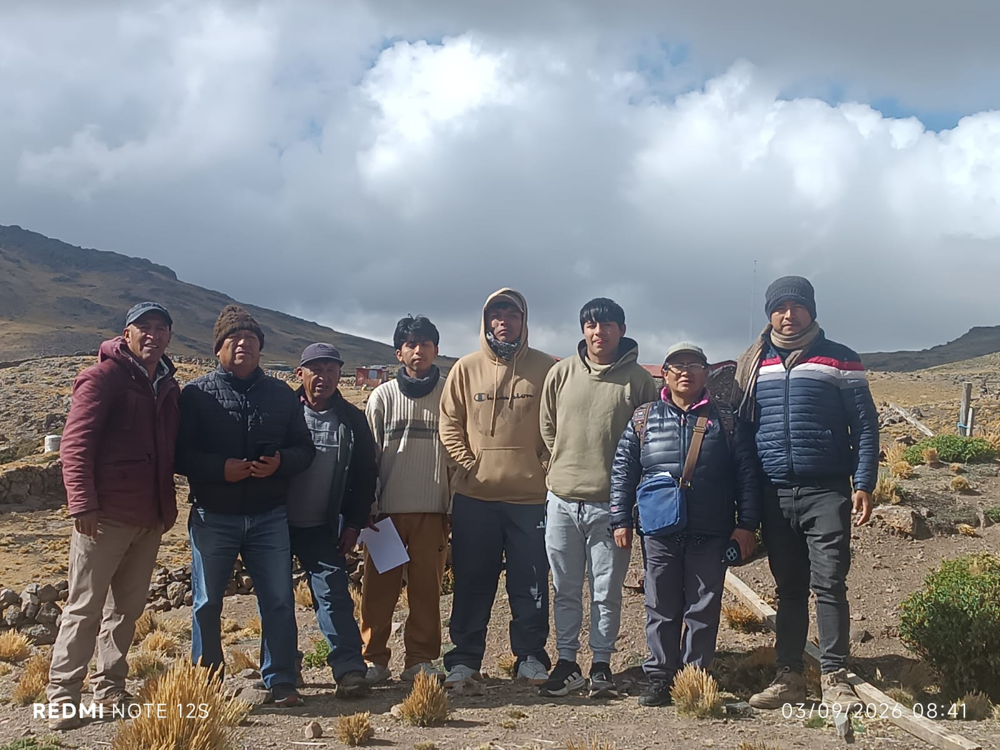
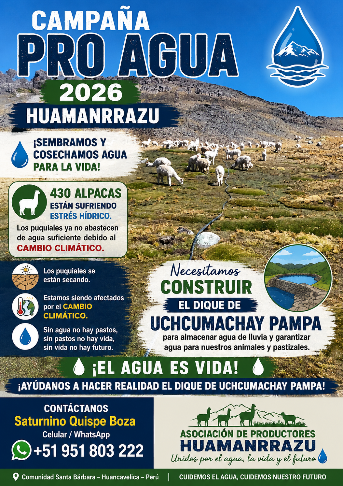

−95% mortalidad crías
430
Alpacas Huacaya
Hato comunal recuperado desde 200 ejemplares gracias a cuidados de altura, sanidad y manejo tecnificado.
Crianza y selección genética incruenta
Unidad Productiva Comunal a 4,750 m.s.n.m. en la Comunidad Campesina de Santa Bárbara (a 30 km de Huancavelica). Más de 10 familias comuneras unidas con infraestructura instalada: Casa de las Alpacas con pararrayos, 6 tanques de reserva hídrica, 2.5 km de tuberías y conectividad satelital Starlink.
Ver proyectos realizados a favor de la comunidad
Acreditaciones técnicas y cumplimiento normativo internacional
Hato comunal recuperado desde 200 ejemplares gracias a cuidados de altura, sanidad y manejo tecnificado.
$73,736.44 USD ejecutados en Casa de las Alpacas (cap. 400), pararrayos de 3 cuerpos, potreros con malla y postes, y tanques Rotoplast.
Capacidad de 2,600 L cada uno, interconectados con 2.5 km de tubería HDPE de conducción para abrevaderos.
Sistema satelital instalado con panel solar, batería, conversor y cabaña comunal prefabricada propia para alertas y monitoreo climático en tiempo real.
Nuestra metodología entrelaza el conocimiento agronómico milenario quechua con tecnologías contemporáneas de bajo costo y alto impacto para mitigar la vulnerabilidad climática extrema.
Gestión comunal del hato de 430 alpacas a 4,750 msnm. Cobertizo “Casa de las Alpacas” para 400 ejemplares con pararrayos de 3 cuerpos, manga de manejo para dosificación sanitaria y botiquín veterinario comunitario que redujo la mortalidad de crías en un 95%.
Campaña Pro Agua y construcción del Dique Uchkumachay Pampa (80 m de largo, 4 m de altura y 3 m de ancho; presupuesto estimado S/ 350,000) para retener aguas de lluvia. Red de tanques de reserva, tuberías de conducción HDPE y zanjas de infiltración frente a la sequía de puquiales.
Convenio con Agro Rural para la clausura y rotación de 50 hectáreas de pastizales distribuidas en 8 potreros. Siembra de 2,500 plantones forestales nativos (pino, kolle y quinual) y parcelas demostrativas de avena forrajera Mantaro 15 para alimentación durante el estiaje.
Transformación in situ de la fibra de alpaca mediante selección por finura y elaboración de hilados y prendas artesanales de alta calidad. Implementación de una planta de procesamiento de charqui higiénico para venta directa a mercados éticos sin intermediación.

Obra estratégica para retener y cosechar agua de lluvia, asegurando el sustento de nuestros rebaños y pastizales frente a la sequía severa y al retroceso de glaciares altoandinos.
Los puquiales ya no abastecen de agua suficiente debido al impacto del cambio climático en las cabeceras de cuenca.
Incluye cemento, fierros, mano de obra técnica, piedra y agregados, transporte hasta la cordillera, alquiler de retroexcavadora, llave de compuerta y gastos imprevistos.
Comunidad Santa Bárbara · Huancavelica, Perú
Contactar por WhatsApp · +51 951 803 222